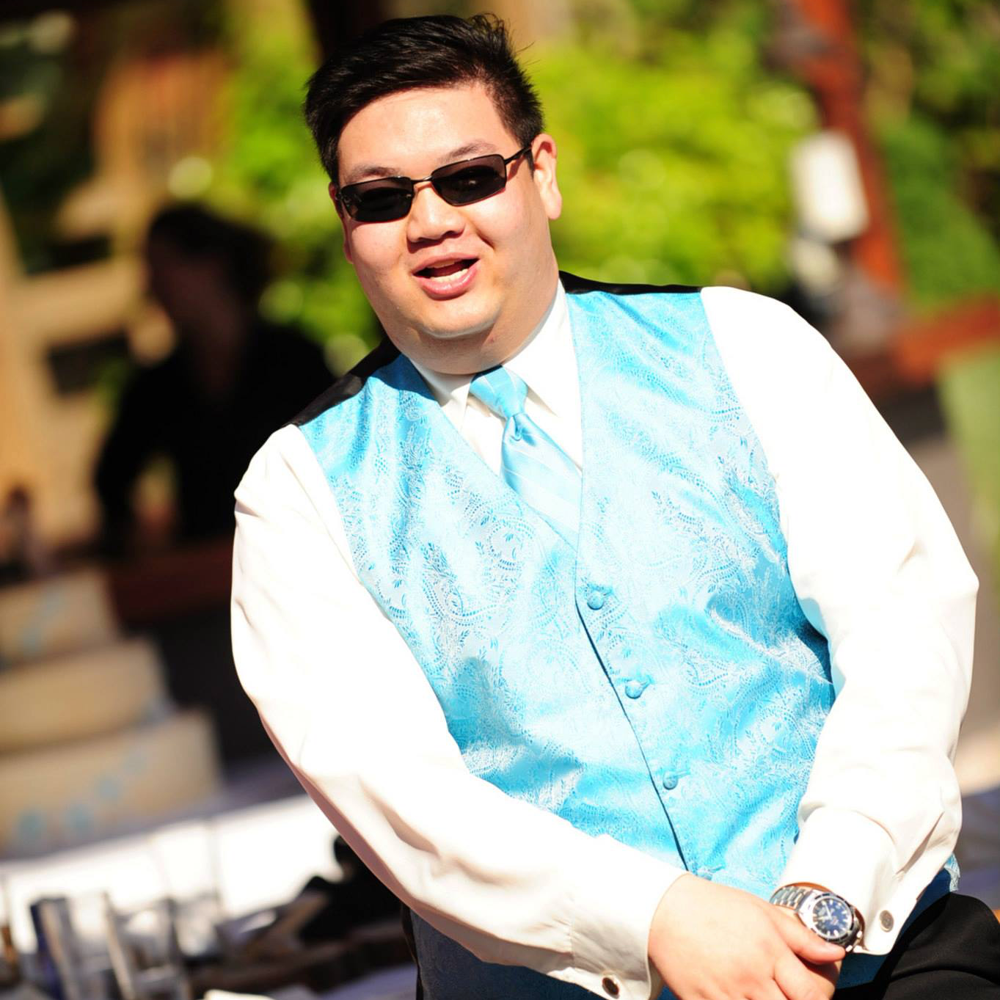

About Me
Born in Torrance, California, Laurentius has lived all of his life in Southern California, spending most of his life in Orange County. He has always had an aptitude for technology and computers, having built his own desktops since he was a teenager. Laurentius has a passion for hockey, having played as a child and off and on for the past ten years in local adult leagues, playing defense. His favorite team is the Anaheim Ducks, his favorite overall player being Teemu Selanne, but also favoring François Beachemin, Ryan Getzlaf, and Rickard Rackell.
Laurentius has loved Star Trek and Star Wars for as long as he can remember and has watched Geek & Sundry for the past 8 years. His other interests include Critical Role, Shield of Tomorrow, Dungeons & Dragons, podcasts, technology, video games, and music. he currently hosts the Below Decks Podcast each week.
Connect with Me